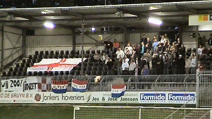
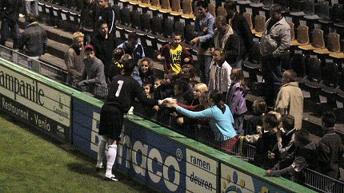

|
VVV - Top Oss (5-1) 17 september 2004 |
VVV -
Top Oss (5-1) 17 september 2004
Venlo is hot, dus meer toeschouwers, meer politie. Bij een zege zal
VVV de eerste plaats overnemen van Fortuna.
We dalen af naar "De Koel".
Vooraan links ligt de fan-shop.
De welhaast Bourgondische catering. Het enige wat hier niet klopt
is het bier; dat is namelijk evenementen-zooi.
Adrie Koster, de trainer van VVV kennen we nog van Roda.
De Venloosche maedjes zijn bijna net zo mooi als onze Rodagirls.

De 100 Ossenkoppen konden al snel juichen.
In de 5e min. ziet Van Dam een schot van richting
veranderd dat
leidt tot een lullig boogballetje dat over doelman Begois zweeft.
Een dikke minuut later scoort Hofstede alweer de gelijkmaker.
Edwin Linssen wordt uit de wedstrijd geschopt. Zijn vervanger is de
vorige week nog disciplinair geschorste Arno Arts.
De eeuwige etterbalk Henk Vos ontsnapte niet aan een gele kaart.
VVV is oppermachtig en degene die de hoekschoppen van de
Venlose club moet turven wordt knettergek. In de 31e min. kopt
Jans op doel. Een speler van Top Oss probeert de bal nog weg te
koppen, maar de bal verdwijnt in het net: 2-1.
In een verder vrij sportieve wedstrijd was er toch een opstootje
nadat een Ossenaar een VVV-speler na-trapte terwijl die al
geblesseerd op het veld lag.
Bernard Hofstede schopt zijn tweede erin: 3-1 (34').
De gasten van de sfeertribune bleven 90 min. achter hun ploeg
staan. Ongelooflijk dat ze niet gestoord worden van dat hek.
Op weg omhoog naar het supportershome zien we nog
net hoe ook
Jans zijn tweede treffer maakt: 4-1 (45').
Volop vreugde in Venlo vanavond.
Weinig geel/zwart in het supportershome in de pauze.
Deze Limburgse Feyenoordfans herinnerden zich nog iets met
broekriemen. Zie
foto van
destijds.
De tweede helft bekeken we vanaf oost omdat we op noord geen
plaats meer konden vinden. Het was druk bij VVV!
Nadeel is dat je hier geen steek ziet, maar er is toch gescoord door
John van Loenhout, de middenvelder die even bij Roda in beeld
leek te zijn. En zo is het na 50 min. 5-1 !!!
Daar word je vrolijk van....
Die Van Loenhout (nr. 10) lijkt verdraaid veel op Eric van der
Luer.
Zelfs de "Feyenoorders" zijn blij.
De supporters van Oss eisten vooral inzet van hun club. Meer
kon
ook niet want voetballend stellen de Brabanders bitter weinig voor.
De wedstrijd blijft boeiend. VVV krijgt nog zeer veel kansen
maar
laat Top Oss in de laatste 10 minuten ook nog af en toe oprukken tot
aan het eigen doel. Het oppermachtige VVV blijft steken op 5-1 wat
een mooie en zeer verdiende overwinning is.
Hermie is een Ajacied.......(Osdorp Posse :-)
VVV bedankt de harde kern.
De harde kern bedankt VVV.

Kevin Begois is de absolute womanizer in Venlo!
Lorette heeft een handtekening gescoord.
Oh oh, en ook nog met 3 kusjes.......
{kind=link}